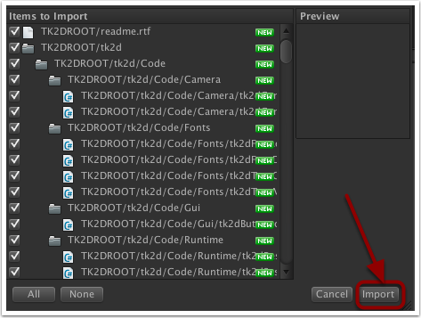
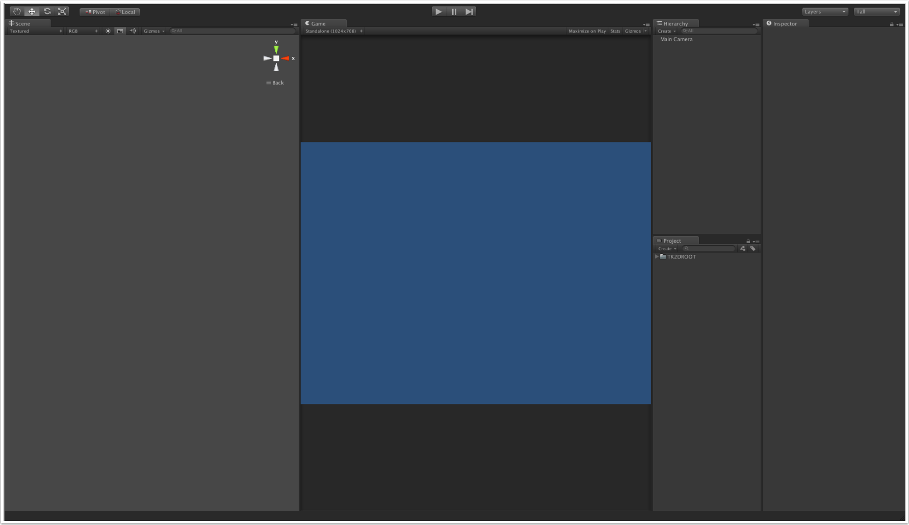

Documentation
Script Reference
Forum
Documentation
Script Reference
Forum
Create a new Unity project ('File > New Project') and choose a name for the project and the directory to store it in.
If you downloaded 2D Toolkit from the asset store, you can install directly from there. If you downloaded it from our website, follow the instructions below to import it into your project.
Find the 2D Toolkit installation file and install it by double clicking on it and click on the 'Import' button.
import.png">
Your Unity screen will look something like this:
screen.png">
We will need some graphics for our game... These can be downloaded from here. Once downloaded, extract the file and move or copy the folder to your Unity project's 'Assets' directory. Unity will extract the assets in the folder and add them to your Project window.
Once all that is done, we can start working on our game!